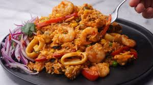

Descripcion
Plato marino hecho a base de frescos mariscos y arroz
INGREDIENTES
- 1 1/2 taza de arroz
- 500g de mariscos mixtos
- 1 cebolla roja
- 2 dientes de ajo
- 1/2 taza de pasta de aji amarillo
- 1/2 pimiento rojo
- 1/2 taza de arvejas
- 1/2 de vino blanco
- 1 1/2 taza de caldo de marisco
- Aceite de oliva
- sal, pimienta y comino
- perejil o cilantro picado para decorar
- limones
Luego de tener los ingredientes se pasara a realizar los siguientes pasos
en los cuales se busca combinarlos de manera precisa
Para obtener la combinacion de Sabores
PROCEDIMIENTO

- Lavar el arroz, con el fin de eliminar el almidon ya que este
compuesto hace que el arroz quede pegajoso, ademas que le da un aspecto pegajoso
- Condicionar los mariscos, dandoles una breve hervida
asi estos quedan menos gomosos y son mas suaves adicionalmente te reservar el caldo de mariscos
- sofreir la cebolla y el ajo, al realizar esto se busca liberar los azucares naturales
y despues agregar el aji amarillo que al calentar libera su aceites
que le maximiza el sabor.
- Añadir el arroz en el sofrito, para que absorve los aromas desde el principio
luego añadir el vino blanco, hasta que se evapore el alcohol y los
compuestos solubles se impregnen en la preparacion.
- añadir el caldo de marisco, y cocinar de manera controlada
asi van absorviendo los sabores de manera controlada
-
Agrega los Mariscos al agregarlos al final el marisco, el pimiento y las arbejas
el primero para que no se sobrecoccione y los otros para que le den color y textura al plato.